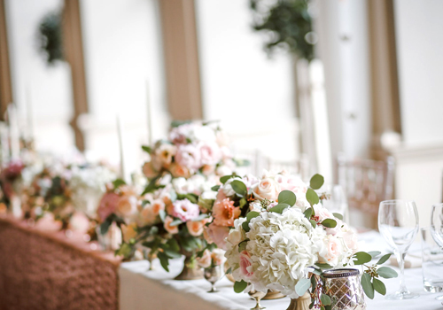

복리후생
미래를 함께할 역량있는 인재를 찾습니다.
일과 삶이 균형을 이루는 행복한 일터 구현을 위해 다양한 복리후생 제도를 운영하고 있습니다.-

일과 삶의 행복
일과 삶의 균형, 행복한 더블라이프를 추구합니다.행복한 삶을 위해서는 일과 삶의 균형이 중요합니다. 포스코그룹은 직원들이 임신과 육아, 경력단절 등의 걱정에서 벗어나 안심하고 근무할 수 있는 환경을 만들고 있습니다. 직원의 기쁜 일과 슬픈 일이 있을 때도 포스코그룹이 지원하고 있습니다. 사내 예식장소 무료 대여, 휴가 제공, 장례용품 지원 등이 있습니다.
-
여가와 문화
다양한 휴양시설과 문화경험이 기회를 제공합니다.충분한 휴가가 있어도 어디서 여가를 즐겨야 할지 고민할 필요가 없습니다. 포스코그룹에서는 전국의 유명 휴양지역의 콘도와 리조트를 직원들에게 지원하고 있습니다. 해운대, 경주, 무주 등에서 휴가를 즐겨보세요. 포스코그룹인이라면 문화생활도 놓칠 수 없겠지요. 서울, 포항, 광양에서 영화 등 문화행사의 관람 기회가 무료로 제공되기도 합니다.
-
건강관리
직원이 건강해야 포스코 그룹도 튼튼해집니다.건강관리의 첫번째 실천은 무엇보다 건강검진입니다. 포스코그룹은 직원에게 매년 1회 건강검진을 제공하고 있습니다. 또한 건강한 가정생활을 영위할 수 있도록 배우자 건강검진 지원제도, 의료비 지원제도 개선 및 단체보험 등을 도입하였습니다. 정기 건강검진 다음으로 중요한 것은 생활 속 꾸준한 운동과 식이습관이지요.
-
주택자금/자녀학자금 지원
안정적인 주거 마련과 자녀 성장을 지원합니다.의식주 중 가장 중요한 것은 '집'이라고 하죠. 그렇기 떄문에 포스코그룹에서는 직원이 주택을 구입하거나 임대하고자 할 때 자금을 지원하고 있습니다. 시중보다 저리로 제공하여 직원의 안정적인 주택 마련에 힘쓰고 있습니다. 그리고 직원의 자녀도 포스코그룹입니다. 대학교 졸업에 이르기까지 자녀의 교육을 위한 학자금이 지원됩니다.
-
자기계발
직원의 발전이 곧 포스코 그룹의 발전입니다.포스코그룹에서는 직원의 개인역량 강화와 성장을 위해 다양한 제도와 프로그램으로 적극 지원하고 있습니다. 유학, 지역 전문가 양성 등 자기계발 프로그램을 통해 직원들을 실무경험과 이론을 고루 겸비한 포스코그룹의 리더로서 성장시키고 있습니다. 또한 외국어, 직무, 리더십 등 수많은 내용의 학습이 가능한 이러닝과 도서관 운영을 통해 직원들이 쉽고 편하게 자기계발을 하도록 지원하고 있습니다.